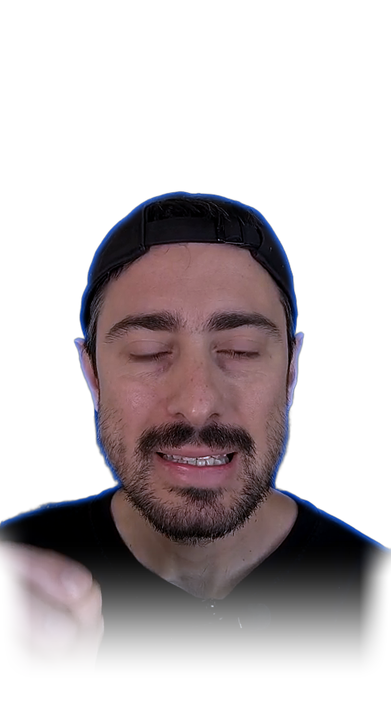

Checklist · Rumor
Solo 7 días para estar listo.
+/−
27/11
7 días

¿Listo para pautar?
15 checks. 5 etapas.
Menos de 2 minutos.
Black Friday
2026
Campaña
zona UI superior
zona UI inferior (descripción, usuario)
botones